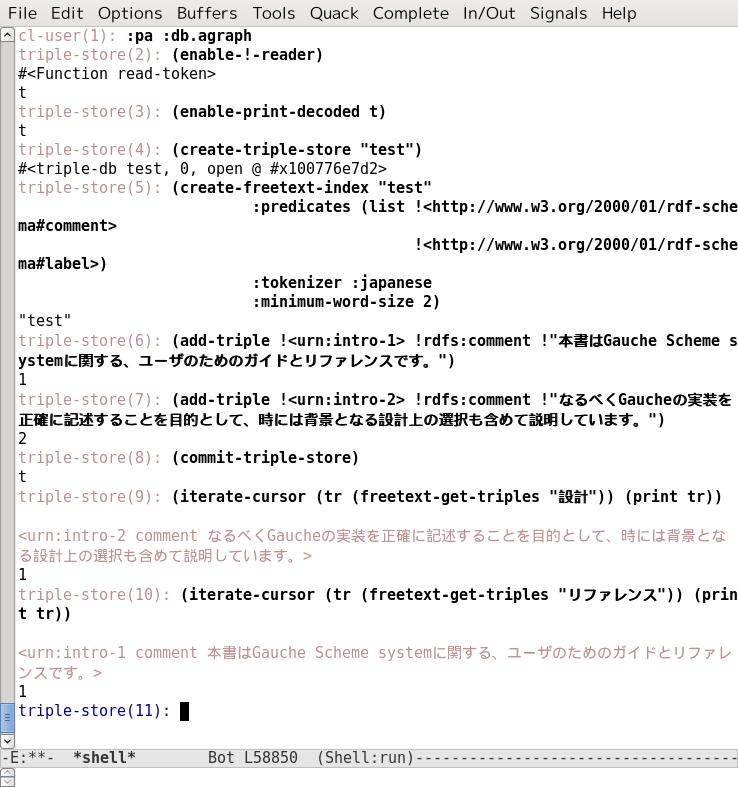

Introduction
AllegroGraph supports its own built in full-text indexer, Apache Solr text indices, and MongoDB indices.
Text-Indexing Features
The built in text indices are based on a locality-optimized Patricia trie, on which we do intelligent trie traversal for fast wildcard and fuzzy searches. The indexing process is fully transactional and is able to easily handle billions of documents.
You may manage AllegroGraph full-text indices through AGWebView or any of the AllegroGraph client APIs including Lisp, Python, or Java.
Each full-text index has a name, so you can apply it to a query or perform maintenance on it.
Each index works with one or more specific predicates, including an option to index all predicates.
An index can be configured to include:
- All literals, no literals, or specific types of literals.
- The full URI of a resource, just the local name of the resource (after the # or /), or ignore resource URIs entirely.
- Any combination of the four parts of a "triple:" the subject, predicate, object, and graph.
Stop words (ignored words) may be specified for each index, or the index can use a default list of stop words.
An index can make use of word filters such as stem.english, drop-accents, and soundex.
- stem.english: Provides stemming of English text.
- drop-accents: Normalizes non-English text by removing accented characters.
- soundex: Indexes words by how they sound, rather than how they are spelled.
From strings to words: Tokenizing
To index freetext, the engine first breaks strings into words (a process called tokenization). There are three built in tokenizers: default, japanese and simple-cjk.
the Default Tokenizer
The default tokenizer works well for most European languages. It defines a word as any run of letters that is at least as long as the minimum-word-size specified for an index. Dashes, underscores and periods do not break words unless they occur at the start or the end. It will also omit the stop words configured for the index. The default list is:
Below are some examples of strings and the words the tokenizer will extract from them:
| Hello there. I am fine. how are you? | "hello" "there" "fine" "how" "are" "you" |
| I think...therefore... I am. | "think...therefore" |
| When indexing, the freetext engine first tokenizes the strings in the triple's object. | "when" "indexing" "the" "freetext" "engine" "first" "tokenizes" "the" "strings" "the" "triple" "object" |
| k = x^{2} + y^{2} defines a circle. | "defines" "circle" |
Indexing words in Japanese
Specifying the :japanese tokenizer allows AllegroGraph to correctly index text from the Japanese language. Here is an example:

Indexing CJK (Chinese/Japanese/Korean words)
The value :simple-cjk' for the :tokenizer` keyword argument to create-freetext-index indexes Chinese/Japanese/Korean (CJK) text. It uses bigrams for consecutive CJK characters as words. To use this tokenizer, specify :simple-cjk as the tokenizer option when creating or modifying a full-text index.
The bigram tokenizer can be used for CJK mixed text, but its simplicity may result in false positives. It also tends to index a much larger number of words compared to other tokenizers.
Freetext Query Expressions
You can query the full-text indices using any AllegroGraph client and via SPARQL using the fti:match and fti:matchExpression magic properties. Each client uses the same query expression language defined informally below:
"string"- Matches triples containing all the words in the string.
(and <pattern1> <pattern2> ...)- Matches triples that match all of the given patterns.
(or <pattern1> <pattern2> ...)- Matches triples that match any of the given patterns.
(phrase "string")- Matches triples that contain the exact string given.
(match "?string*")- Matches triples that match the given string, supporting wildcards, where
?matches any single character, and*matches any number of characters. Note that, in a big triple-store, matching patterns starting with a*or?can be very slow.
Here are some Lisp client examples:
- find all the triples whose object contains the word "baseball"
(freetext-get-triples "baseball") - find all triples whose object contains all of the words "baseball", "soccer", and "champions"
(freetext-get-triples "baseball soccer champions") (freetext-get-triples '(and "baseball" "soccer" "champions")) - find all triples whose object contains at least one of the words "baseball", "soccer", or "champions"
(freetext-get-triples '(or "baseball" "soccer" "champions")) - find all triples that contain any word ending in "ball". Note that this wildcard match is more expensive than the simple word matches above.
(freetext-get-triples '(match "*ball")) - find all triples that contain any 8-letter word ending in "ball". Note that this wildcard match is more expensive than the simple word matches above.
(freetext-get-triples '(match "????ball")) - find all triples that contain the exact phrase "baseball champions"
(freetext-get-triples '(phrase "baseball champions"))
The function text-index:parse-query converts a string based query into the s-expression based format. For example:
(text-index:parse-query "\"common lisp\" (programming | devel*)")
==>
(and (phrase "common lisp") (or "programming" (match "devel*"))) This can be convenient when needing to convert user input into a free text query.
Solr text indexing
Text indexing using Apache Solr is described the document Solr text indices. In that document, we go into some detail about whether to use the native AllegroGraph full-text indexing or to use Solr. In short (again, see Solr text indices for full details), the native full-text indexer is faster, has a simpler API, and does not require synchronization between the indexer and the database (Solr runs as as a separate program and so has to be told about changes to the database). The native indexer is sufficient for many purpose. Solr has the advantage of using a powerful public product which is always being improved.